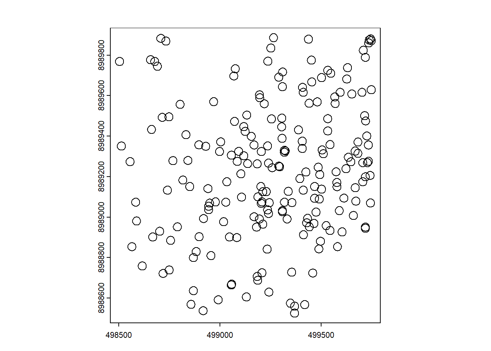
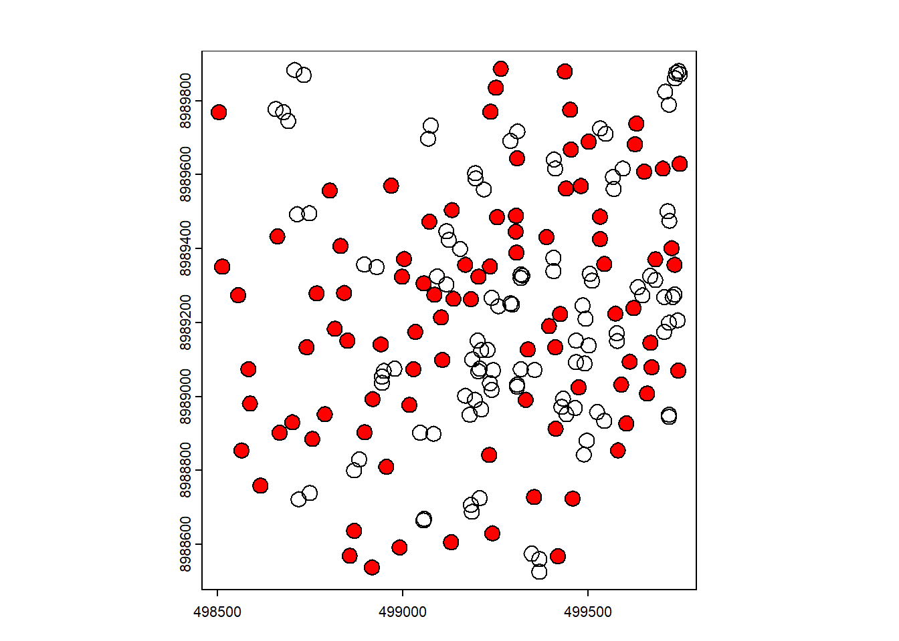
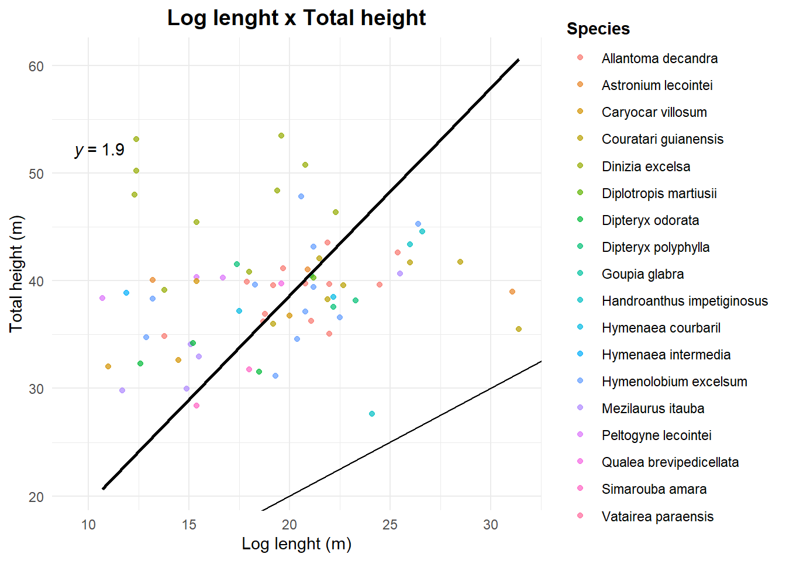
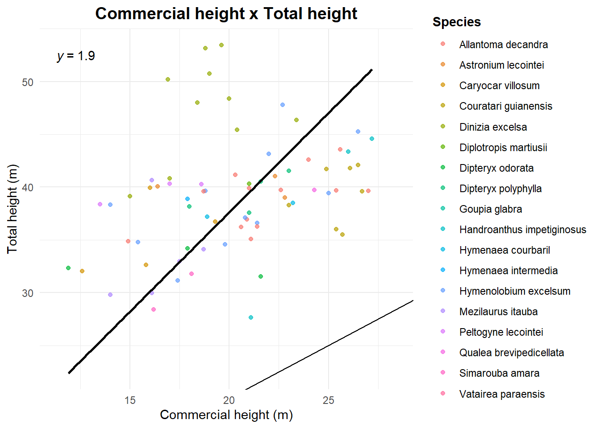
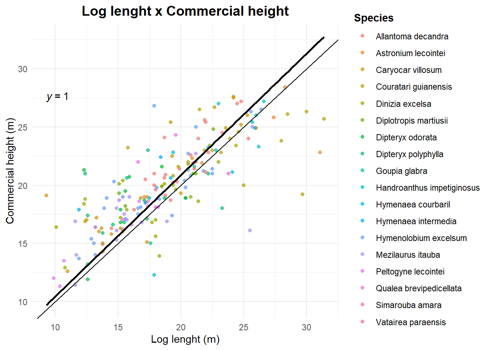

6 Workflow to extract tree height from Lidar CHM
6.1 Introduction
This is a pilot script to extract tree heights from a Canopy Height Model (CHM) generated from LiDAR-derived point clouds in a forest management area. Two CHMs are used: one from the year before harvesting (2015) and one from the year after harvesting (2017). Data from the Commercial Forest Inventory of the area are also incorporated (generated by the Chapter 3 script).
The goal is to identify the crowns of harvested trees and obtain their heights from the CHM metrics. To ensure transparency and reproducibility, outputs will be generated at each processing step, allowing one to clearly see how the final results were obtained.
6.2 Lecture
- CHM generation: Fischer et al. (2024).
6.3 Setup
You need terra package to handle spatial data and dplyr to manipulate tabular data.
6.4 Working directories
First we set our working directories: the main one, the output, the location of CHMs, and the location of Forest Inventory.
6.5 Parameters
Then we set the script parameters.
lim_inf = Percentage points threshold to be considered as a gap. When subtracting two CHMs the output difference can be full of noises (a branch that broke or moved for example). Setting a threshold ensures we will select only the large differences.
pol_area = Minimum area to be considered as a gap (m2).
projection = Projection of spatial data.
buffer_size = Buffer size around each tree to avoid confusing very close trees and also to identify the associated gap.
percentil = Percentile used to extract maximum height in the identified canopy area.
upa.piloto = Annual Production Unit used in this test.
umf = Forest Management Unit used in this test.
6.6 Data
The CHMs were generated by Fabian Fischer from Brazilian Forest Concessions Lidar data, using the method described in Fischer et al. (2024).
Commercial inventories were obtained from Brazilian Forest Concessions.
6.7 Running Code
6.8 CHM processing
Load the CHMs and assign the projection.
Clip the CHMs intersection area.
Subtract CHM after exploitation from CHM before exploitation and keep only valid pixels.
Visualize the result.
Keep only the higher differences between the two CHMs, to ensure that are really gaps from the exploitation, using the threshold defined before (lim_inf).
Visualize the filtered result
Convert the result to polygons, project them, calculate area and filter them using the minimum area defined before (pol_area).
Visualizing the results.
The original raster (r2 - r1).
All the gaps.
The filtered gaps (area > 25 m2).
6.9 Forest Inventory
Load the Commercial Forest Inventory, subset it to the pilot APU, and filter it to include only the harvested trees. Then convert it to a spatial vector, project it to the defined CRS and clip it using raster the extent.
Code
if100_romaneio <- read.csv(if100_pesquisa)
if100_upa <- subset(if100_romaneio,
codigo == paste0("Jamari_",
"UMF_",
umf,
"_UPA_",
upa.piloto))
if100_upa <- if100_upa[!is.na(if100_upa$vol_tora), ]
if100_upa$id_arv <- paste0(if100_upa$codigo,
"_arv_",
if100_upa$num_arvore)
if100_pts <- vect(if100_upa,
geom = c("Longitude",
"Latitude"),
keepgeom = TRUE,
crs = "EPSG:4674")
crs(if100_pts) <- "EPSG:4674"
if100_pts <- project(if100_pts,
projection)
if100_pts <- crop(if100_pts,
diff_raster)Plot the filtered gaps and the exploited trees.

Create an ID for each tree and generate a buffer around them using the buffer size defined earlier. The buffer is intended to prevent confusion between trees that are too close, which could lead to selecting the wrong crown.
Code

Remove the buffers that touch each other so that only isolated trees remain.
Code

Select the gaps that intersect with the tree buffers. Sometimes more than one gap intersects the same tree buffer, so we will select the gap whose boundary is closest to the tree.
Code
pts_sel <- if100_pts[ if100_pts$id_arv %in% b_isolados$id_arv , ]
sel <- relate(poly_filtrado,
b_isolados,
"intersects")
lista_copas <- apply(sel,
2,
function(x) which(x))
idx_mantidos <- c()
for (i in seq_along(lista_copas)) {
copas_idx <- lista_copas[[i]]
if (length(copas_idx) == 0) next
if (length(copas_idx) == 1) {
idx_mantidos <- c(idx_mantidos,
copas_idx)
next
}
distancias <- distance(
pts_sel[i, ],
poly_filtrado[copas_idx, ]
)
idx_melhor <- copas_idx[ which.min(distancias) ]
idx_mantidos <- c(idx_mantidos,
idx_melhor)
}
idx_mantidos <- unique(idx_mantidos)
pol_copas_sel <- poly_filtrado[idx_mantidos, ]Visualize the results. Gray polygons are the gaps, blue polygons are the buffers and red are the gaps that intersects the buffers.
Code

Relate each gap to its intersecting crown so that every gap receives a tree ID.
Visualize the results. Gaps are in blue, buffers in red. Each gap has an tree ID.

6.10 Extracting heights
Extract height values from the pre-harvest CHM using the delimited gaps. Use the maximum height based on the previously defined percentile to avoid outliers and points that do not represent the actual tree height (such as an emerging branch, for example).
Add the tree height column to the Forest Inventory table.
6.11 Results
Voilà. Final data frame has the tree total height obtained with Lidar.
Let`s write it down, and may the analysis begin.
6.12 Graphics
Some plots to see the relations between total height (obtained by Lidar) and commercial height (from the forest inventory) and log lenght (from the logbook)
Code
library(ggplot2)
ggplot(if100_pts_z,
aes(x = comprim_tora,
y = z_max)) +
geom_point(alpha = 0.7,
aes(color = nome_florabr)) +
geom_smooth(method = "lm",
se = FALSE,
color = "black",
formula = 'y ~ 0 + x') +
theme_minimal() +
labs(
title = "Log lenght x Total height",
x = "Log lenght (m)",
y = "Total height (m)",
color = "Species"
) +
theme(
plot.title = element_text(hjust = 0.5,
size = 14,
face = "bold"),
legend.title = element_text(face = "bold")
) +
geom_abline() +
ggpubr::stat_regline_equation(formula = 'y ~ 0 + x')
Code
ggplot(if100_pts_z,
aes(x = Altura,
y = z_max)) +
geom_point(alpha = 0.7,
aes(color = nome_florabr)) +
geom_smooth(method = "lm",
se = FALSE,
color = "black",
formula = 'y ~ 0 + x') +
theme_minimal() +
labs(
title = "Commercial height x Total height",
x = "Commercial height (m)",
y = "Total height (m)",
color = "Species"
) +
theme(
plot.title = element_text(hjust = 0.5,
size = 14,
face = "bold"),
legend.title = element_text(face = "bold")
) +
geom_abline() +
ggpubr::stat_regline_equation(formula = 'y ~ 0 + x')
Code
ggplot(if100_pts_z,
aes(x = comprim_tora,
y = Altura)) +
geom_point(alpha = 0.7,
aes(color = nome_florabr)) +
geom_smooth(method = "lm",
se = FALSE,
color = "black",
formula = 'y ~ 0 + x') +
theme_minimal() +
labs(
title = "Log lenght x Commercial height",
x = "Log lenght (m)",
y = "Commercial height (m)",
color = "Species"
) +
theme(
plot.title = element_text(hjust = 0.5,
size = 14,
face = "bold"),
legend.title = element_text(face = "bold")
) +
geom_abline() +
ggpubr::stat_regline_equation(formula = 'y ~ 0 + x')